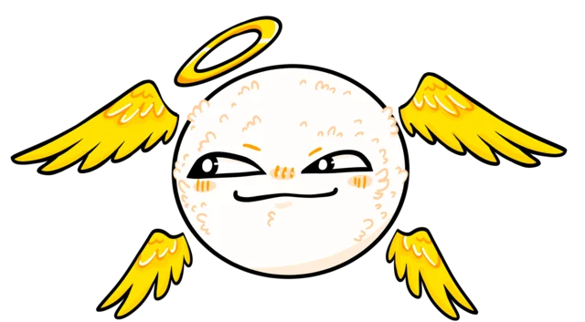
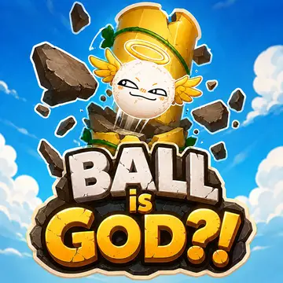

Ball is God?! Forgasd el a tornyot. Légy a becsapódás.
Egy kemény függőleges ereszkedő árkád, ahol vízszintes húzás forgatja a tornyot a leeső Espa körül. Hagyd ki a biztonságos leszállást, hajts végre egy kombót, és törj át egy mitikus világot, ahol egyetlen őrizetlen ütés véget vet a futásnak.
Aktív gyártás: tíz helyszínjelenet, főellenségek, elágazó párbeszédek és karmaösvények, amelyek megváltoztatják a játékszabályokat.
Forgatáshúzd a tornyot Espa körül
Kockázathagyj ki három biztonságos leszállást
Zúzástörj át a platformon
A jelenlegi builden belül
A karma többet változtat, mint a párbeszéd.
A fény, a semleges és a sötét karmaösvények megváltoztatják a pajzs viselkedését, a figyelmeztető jelzéseket, az ellenségek agresszióját és a főellenségek fázisait, így a történet megváltoztatja, hogyan játszol.
Build állapota Aktív gyártásMind a tíz párbeszédvilág
Párbeszédhátterek mind a tíz világhoz, leereszkedési sorrendben: Ena az első, Deka az utolsó.


Jelenlegi gyártási felület
Pályaválasztó-, párbeszéd- és eredményképernyők a jelenlegi buildben.
Ez a jelenlegi folyamat abban a sorrendben, ahogy találkozol vele: pályaválasztás, párbeszéd, egy mérföldkő-döntés, majd győzelem vagy külön vereségképernyő. Az alábbi vizuális elemek mindegyike a Unity éles projektjének grafikáját használja.
Az égi útvonal tíz 100 szintű fejezetből választ ki generált szinteket.
A gyártási menü tíz helyszínt térképez fel 100 szintű fejezetben, és közvetlenül a kiválasztott futtatáshoz nyílik meg.

 201
201A párbeszéd a helyszínen belül zajlik.
A karakterportré, a helyszíni grafika és a beszélő névtáblája egyetlen függőleges keretet oszt meg.


Shash
Akkor folytasd, de ne hidd, hogy könnyű lesz. Próbák várnak rád, amelyektől minden korábbi apróságnak tűnik.
04 / Mérföldkő-választás
A válasz a leereszkedés részévé válik.
A 90-es és 100-as helyi szinten a dedikált testület a „start-or-kill” döntést kéri, mielőtt a párbeszéd megoldaná a futást.

Kíméld
Öld meg
05 / Eredménymenük
A győzelem folytatódik. A vereség visszatér ugyanahhoz a kihíváshoz.
A jelenlegi buildnek két külön eredményállapota van: a PanelWin újrajátszást és a következő szintet kínálja, míg a PanelOver egy összetéveszthetetlen visszajátszási akciót tart fenn.
Győzelem · PanelWin
Leereszkedés teljesítve
 Újrajátszás
Következő
Újrajátszás
Következő
Újrajátszás
Következő
Párbeszéd szereplői
Arcok találkoztak lefelé menet.
Az alábbiakban megtalálható mind a 25 karakter érvényes, nyitott és zárt portrépárokkal. A kifejezés váltásához vigye az egérmutatót egy kártyára, vagy fókuszáljon rá.




A játék áttekintése
A Ball is God?! hardcore arcade játék arról, hogy egy forgó toronyban zuhansz lefelé.
Az ötlet
Vezesd le Espa karaktert egy isteni tornyon. Egyetlen hiba véget vethet a menetnek, a nagy döntéseid pedig megváltoztatják, hogyan játszik a világ.
Jelenlegi build
Tíz helyszíni jelenet, procedurális toronygenerálás, kombinált összetörés, ellop pajzs, főnök konfigurációk, elágazó párbeszédek, gyártási menük és kifejezésre kész portrék valósulnak meg.
Közönség
Azoknak a játékosoknak, akik szeretik a kemény mobilos arcade játékokat, a kockázat-jutalom időzítést és a főellenségeket, követhető történettel.
Állapot
Aktív gyártás. A közelmúlt munkája a futtatási rendszereket, a világgrafikát, a tesztelést és a játék telefonos működését érinti.
Jellemzők
Mit csinálsz a Ball is God?! játékban
Húzással forgatható leereszkedés
A vízszintes húzás elforgatja a tornyot az automatikusan lezuhanó Espa körül, felsorakoztatva a hézagokat, veszélyeket és biztonságos platformokat.
Hardcore arcade nyomás
Egyetlen védtelen találat véget vet a menetnek, ezért olvasnod kell a tornyot, és minden lépést időzítened kell.
Bossok és mitikus világok
Tíz helyszínjelenet, mindegyik saját főellenségekkel, viszi tovább a történetet egyik világból a másikba.
Döntések, amelyek megváltoztatják a szabályokat
Irgalmasság, erő és karma megváltoztatása párbeszéd, pajzsszabályok, ellenséges agresszió, távírók és főnöki fázisok.
Játékmenet-ciklus
Így játssz a Ball is God?! játékkal
- 01. lépésOlvasd el a leereszkedést
Figyeld a következő platformokat, réseket és veszélyeket, és keresd a biztonságos időzítési ablakokat, miközben zuhansz.
- 02. lépésForgasd el a tornyot
A vízszintes húzás megfordítja a világot a Espa körül, igazítva egy biztonságos platformot vagy egy szándékos rést.
- 03. lépésKockáztass és törj össze
Hagyj ki három platformot a kombinált összetöréshez, majd törj át szerkezeteken, miközben a pajzs egy halálos hibát fedez.
- 04. lépésVálaszd ki a következményt
Az irgalom és az erő formálja a karmát, a párbeszédet és a játékszabályokat, amelyek az ellenségekbe és a főnökökbe viszik át.
Történet / világ
Egy mitikus torony, ahol a döntéseid veled együtt ereszkednek le.
A Ball is God?! a mobil, függőlegesen süllyedő játéktermek gyermekkori rajongásából indult ki: hiányosságok olvasása, gyors reagálás és ösztönös túlélés.
A formátum többet is elbírt volna: főellenségeket, egyéniséggel bíró karaktereket, történetet és erkölcsi feszültséget. A jelenlegi projekt Espa karaktert követi tíz helyszínjeleneten és különös szereplők gárdáján át, olyan döntésekkel, amelyek a történetet és a játékot is megváltoztatják.
Így a cél egy egyszerű, függőleges leereszkedős arcade lett, egy főellenség-harc nyomásával és egy történetvezérelt RPG következményeivel.
- Jövőkép
- Forgótornyos arcade mitikus történettel
- Jelenlegi világméret
- Tíz helyszín és bosskonfiguráció
- Történet szakasza
- Teljes hosszú formájú történetvázlat
- Gyártási állapot
- Aktív gyártás
Dióhéjban
Egyszerű húzásvezérlés, olyan történettel, amely megváltoztatja a szabályokat.
A húzással forgatós vezérlés azonnali. A többit a mitikus világok, a főellenségek és a játékmenetet megváltoztató döntések adják.
A jelenlegi build már egyesíti a determinisztikus toronygenerálást, a kockázat-jutalom alapú csapásokat, az egy találatos kudarcot, a főellenségeket, az elágazó párbeszédeket és a játékmenetet megváltoztató karmát.
- Műfaj
- Történetvezérelt, függőleges leereszkedős arcade
- Platformcél
- iOS / Android
- Játékalkalom formája
- Gyors, készségalapú menetek
- Stúdió
- WillowinWorlds
Anyagok letöltése
Ball is God?! sajtó- és alkotói anyagok
WebP előnézetek sajtóbemutatókhoz, kiadói értékeléshez és áruházi oldalak hivatkozásaihoz. A teljes felbontású forrásfájlok kérésre elérhetők.
Márka és karakterek
A játék ikonja, valamint mind a 25 karakter, amelyek teljes gyártási párbeszédes portrékkal rendelkeznek. A nevek megegyeznek a Unity lokalizációs kulcsokkal.

JátékikonFüggőleges leereszkedős torony arcade ikon.EspaJátékos karakterportré.
RevlaProdukciós párbeszéd portré.
ShashProdukciós párbeszéd portré.
ShushProdukciós párbeszéd portré.
ShishProdukciós párbeszéd portré.
GigoProdukciós párbeszéd portré.
GogaProdukciós párbeszéd portré.
GigaProdukciós párbeszéd portré.
AskoldProdukciós párbeszéd portré.
MirasProdukciós párbeszéd portré.
HihProdukciós párbeszéd portré.
HehProdukciós párbeszéd portré.
HahProdukciós párbeszéd portré.
MusyaProdukciós párbeszéd portré.
DusyaProdukciós párbeszéd portré.
SusyaProdukciós párbeszéd portré.
VladusProdukciós párbeszéd portré.
FrishaProdukciós párbeszéd portré.
LurenProdukciós párbeszéd portré.
KurenProdukciós párbeszéd portré.
Don YagonProdukciós párbeszéd portré.
LuryaProdukciós párbeszéd portré.
KhleyaProdukciós párbeszéd portré.
VaronProdukciós párbeszéd portré.
WhiteProdukciós párbeszéd portré.
Menü hátterek
Az égi szintkiválasztó rendszer által használt jelenlegi alkotás.
 Égi menü
Égi menü
Függőleges leereszkedés világai
Tíz jelenlegi helyháttér teljes készlete, Ena és Deka között.
 01 · ÉgvilágEna függőleges leereszkedés háttere.
01 · ÉgvilágEna függőleges leereszkedés háttere.
 02 · ŰrvilágDyo függőleges leereszkedés háttere.
02 · ŰrvilágDyo függőleges leereszkedés háttere.
 03 · ViharvilágTria függőleges leereszkedés háttere.
03 · ViharvilágTria függőleges leereszkedés háttere.
 04 · HóvilágTessera függőleges leereszkedés háttere.
04 · HóvilágTessera függőleges leereszkedés háttere.
 05 · VulkánvilágPente háttér; animált a játékban.
05 · VulkánvilágPente háttér; animált a játékban.
 06 · ÓceánvilágEksi függőleges leereszkedés háttere.
06 · ÓceánvilágEksi függőleges leereszkedés háttere.
 07 · Sivatagi világEpta függőleges leereszkedés háttere.
07 · Sivatagi világEpta függőleges leereszkedés háttere.
 08 · ErdővilágOhto függőleges leereszkedés háttere.
08 · ErdővilágOhto függőleges leereszkedés háttere.
 09 · BarlangvilágEnnea függőleges leereszkedés háttere.
09 · BarlangvilágEnnea függőleges leereszkedés háttere.
 10 · PokolvilágDeka függőleges leereszkedés háttere.
10 · PokolvilágDeka függőleges leereszkedés háttere.
Történetes arcade hátterek
Teljes párbeszéd-helyszín készlet: a Fény Csarnok és hátterek mind a tíz világhoz.
 00 · FénycsarnokNyitó párbeszéd háttere.
00 · FénycsarnokNyitó párbeszéd háttere.
 01 · Égbolt párbeszédEna történetháttér.
01 · Égbolt párbeszédEna történetháttér.
 02 · ŰrpárbeszédDyo történetháttér.
02 · ŰrpárbeszédDyo történetháttér.
 03 · ViharpárbeszédTria történetháttér.
03 · ViharpárbeszédTria történetháttér.
 04 · HópárbeszédTessera történetháttér.
04 · HópárbeszédTessera történetháttér.
 05 · VulkánpárbeszédPente történetháttér.
05 · VulkánpárbeszédPente történetháttér.
 06 · ÓceánpárbeszédEksi történetháttér.
06 · ÓceánpárbeszédEksi történetháttér.
 07 · Sivatagi párbeszédEpta történetháttér.
07 · Sivatagi párbeszédEpta történetháttér.
 08 · Erdei párbeszédOhto történetháttér.
08 · Erdei párbeszédOhto történetháttér.
 09 · Barlangi párbeszédEnnea történetháttér.
09 · Barlangi párbeszédEnnea történetháttér.
 10 · Pokoli párbeszédDeka történetháttér.
10 · Pokoli párbeszédDeka történetháttér.
Ball is God?! GYIK
Gyakori kérdések a Ball is God?! játékról
Milyen játék a Ball is God?!
Hardcore, függőleges leereszkedős arcade. Egy tornyot forgatsz a leeső Espa körül, kihagyod a biztonságos landolásokat, hogy csapásokat tölts fel, és áttöröd a mitikus világokat.
Hogyan játszható a Ball is God?!
Húzza vízszintesen a torony elforgatásához, ugorjon ki három platformot az ütközéshez, és csúsztassa függőlegesen, amikor a hűtőpajzsnak el kell fogadnia egy halálos ütést.
Megjelent már a Ball is God?!
Még nem. Aktív gyártás alatt áll: futtatási rendszerek, világgrafika, történeti tartalom és tesztelés. Nincs nyilvános megjelenési dátum. A célplatformok az iOS és az Android.
Miben más a Ball is God?!
Kockázat és jutalom alapú arcade nyomást vegyít tíz helyszínnel és karmával, amely megváltoztatja a párbeszédeket, az ellenségeket, a jelzéseket, a pajzsokat és a főellenségeket.
Ki készíti a Ball is God?! játékot?
A WillowinWorlds független stúdió, amely mobilos puzzle és arcade játékokat készít.
Használhatom a Ball is God?! sajtóanyagait?
Igen, sajtóhoz, kiadói értékeléshez és áruházi hivatkozásokhoz. A forrásfájlok privátak maradnak, hacsak nem kéred őket tőlünk.
Ball is God?! Devlog
Mi változott és mikor
- Világfelületek és veszélyellenőrzés
A karakterek bemutatása, a determinisztikus generálás és a tüskés veszélyek közös vizuális és ellenőrzési átdolgozást kaptak.
- 2026. júliusGyártási UI és karakterek átdolgozása
A pályaválasztás, a közös műveleti vezérlők, a függőleges párbeszédkeret és a páros karakterkifejezések már a helyükön vannak.
- 2026. februárA projekt hatókörének áttekintése
A csapat befejezett egy nagy történetintegrációs igazolványt, és áttekintette a projekt teljes skáláját: tíz világot, erkölcsi döntéseket, főnököket és többszörös befejezést.
- 2025. április-májusTörténet átírása és képességek
A teljes történetet átírták, a karakterek képességei javultak, és az erkölcsi következmények egyértelműbbé váltak.
- 2024. augusztusKezdődik a történet irányának kidolgozása
A csapat úgy döntött, hogy a Ball is God?! legyen több egy egyszerű arcade leereszkedésnél, ezért mitikus történetet és erkölcsi döntéseken alapuló víziót adott hozzá.
- 2024. júliusEredeti koncepció
A projekt a stúdió első játékötleteként indult: egy gyors, függőleges arcade játék egy isteni toronyban való zuhanásról.
- Jelenlegi buildArcade és történet egyetlen buildben
A forgótornyos leereszkedés, a kombócsapás, a pajzs elhúzása, a főellenségek, a párbeszédek és a karma mostantól együtt működnek egyetlen buildben.